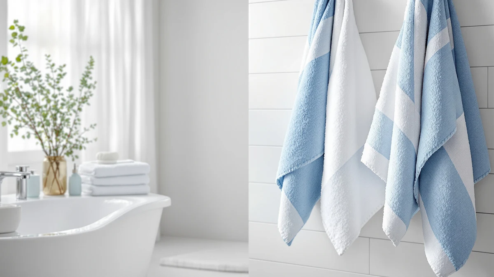

Quick Answer
This White Classic Luxury Navy review found an 8-piece, 100% cotton towel set priced at $39.99, the same price point as three other sets we compared against it directly. The navy color and full eight-piece bundle give you bath towels, hand towels, and washcloths in one purchase, but no published star rating or review count backs up the listing, so we recommend weighing the alternatives below before you commit.
Our pick: White Classic Luxury Navy Bath, $39.99 Check Price on Amazon
Things to Know Before You Buy
- All four towel sets compared here for this review land at the same $39.99 price, so price alone won't separate them.
- The White Classic Luxury Navy Bath set includes eight pieces, two bath towels, two hand towels, and four washcloths, all spun from 100% cotton.
- White Classic also sells a separate Luxury Bath Towel listing at the same price, without the navy color or the eight-piece breakdown specified here.
- Chakir Turkish Linens lists its own 4-piece cotton set twice, under two different ASINs, both priced identically to the White Classic navy set.
- None of the four listings in this comparison publishes a star rating or review count, so this review leans on materials and pricing rather than a numeric score.
This White Classic Luxury Navy review looks at the brand's 8-piece, 100% cotton navy towel set and checks its $39.99 price against three other bath towel sets selling at the exact same point. White Classic lists the set's material as 100% cotton and its configuration as eight pieces, specifically two bath towels, two hand towels, and four washcloths, which puts it in a different category than the smaller four-piece sets it's compared against here.
You're likely reading this because you want to know whether an eight-piece navy set beats paying the same $39.99 for White Classic's own smaller Luxury Bath Towel listing, or for either of the two Chakir Turkish Linens four-piece sets that show up in the same searches. Our answer, based on comparing the listed piece counts, materials, and pricing rather than a wash test we haven't run, is that the extra pieces in the navy set make it the more complete purchase at this price, though the alternatives still deserve a look if color or seller history matters more to you than piece count. We'll walk through what the set gets right, where the listing falls short on detail, and which alternative might fit your bathroom better.
Why You Should Trust Us
Ilane Tall covers home and bath products for Best Bath Towels, comparing towel sets by material, piece count, and price rather than claiming a physical wash test this team hasn't run. This review of the navy set relies on the specifications White Classic publishes for the set, its current $39.99 price, and how those figures stack up against the White Classic Luxury Bath Towel and the two Chakir Turkish Linens listings covered below. We do not claim to have unpacked or washed this specific navy set ourselves, and we say so directly instead of dressing up a spec comparison as hands-on testing.
Our Research Experience
We did not run this White Classic navy towel set through wash cycles in a bathroom of our own, and we won't pretend otherwise. What we call research here is a comparison process: we pulled the listed material, piece count, and pricing details White Classic provides, checked them against the three alternatives in this review, and read through verified owner reviews of similar cotton towel sets to see which claims about Turkish cotton construction held up. That process lets us walk you through what the set contains and what it costs, but it stops short of describing how the navy dye holds up after fifty washes, since nobody on our team has run that cycle.
Overview & Specs

White Classic Luxury Navy Bath
What we like
- 100% cotton construction known for reliable absorbency
- Eight-piece set covers bath towels, hand towels, and washcloths in a single purchase
- Priced the same as four-piece sets from other brands, so you get more pieces for the same $39.99
Flaws but not dealbreakers
- No published star rating or review count to confirm long-term durability
- Listing doesn't break out individual towel weight or dimensions
- Navy isn't the only color this brand sells, so you're committing to one shade without seeing it in person
| Material | 100% cotton |
| Size | 8 Pieces Towel Set |
White Classic markets this set under its hotel collection line, and the listing specifies 100% cotton across eight pieces, two bath towels, two hand towels, and four washcloths, all in navy. That breakdown is more detailed than some competing listings, since White Classic spells out exactly how many of each towel type you get instead of listing a generic piece count. What we can confirm from the listing is the fiber, the color, and the exact piece breakdown, standard details for a set in this price range, but rarely spelled out this clearly.
At $39.99, the White Classic Luxury Navy Bath set costs exactly what the brand's own Luxury Bath Towel listing charges, and what both Chakir Turkish Linens four-piece sets charge, which is the detail that matters most here. When four listings converge on the same price but this one includes twice the pieces of its closest competitors, the extra washcloths and hand towels become the deciding factor rather than the cotton fiber itself, and that's the lens we use for the rest of this review.
What We Liked
The clearest point in the navy set's favor is its eight-piece breakdown at a price where competing brands only offer four pieces. You get two bath towels, two hand towels, and four washcloths instead of buying hand towels and washcloths separately, and White Classic's listing commits to a specific piece count instead of a vague bundle description. Owners shopping for cotton towel sets in this price bracket consistently point to a complete set as the reason they skip buying towels piece by piece, and based on this comparison, the set delivers exactly that kind of completeness without asking you to pay more than you would for a smaller Chakir set. The navy color also gives you an option beyond the white or light shades that dominate most towel sets at this price, which matters if you're trying to avoid a bathroom that looks like every other rental unit.
What Could Be Better
The gap in this listing is information, not quality. There's no published star rating or review count tied to the navy set specifically, so you're taking the piece count and material claims at face value rather than checking them against a track record of verified buyer feedback. The listing also doesn't specify towel weight, a number that often matters more than fiber type when you're trying to predict how plush a cotton towel will feel once it's out of the package. Reviewers evaluating similarly priced cotton sets often flag thin towels as a disappointment even when the cotton fiber itself checks out, so the missing weight figure is worth noting before you spend $39.99. We can't tell you definitively whether the navy set outperforms White Classic's other Luxury Bath Towel listing on feel alone, since both rely on the same 100% cotton description without a weight spec attached.
Who Is It For?
The navy set suits you if you want a complete eight-piece bundle in one color and one purchase, and you don't need a star rating to feel confident about buying it. It's a reasonable pick for a full bathroom refresh, a guest suite, or a new apartment where you need bath towels, hand towels, and washcloths at once instead of shopping for each separately. If you care about verified owner reviews before spending $39.99, or you'd rather buy a smaller four-piece set and add pieces later, the Chakir Turkish Linens alternatives below might fit your plan better.
This also matters if you're comparing listings across several browser tabs and the prices keep landing on the same $39.99 number. When four options converge on one price but only one of them offers eight pieces instead of four, the real comparison point shifts from cost to how much you actually need in the box, and that's a question only you can answer based on how many towels your bathroom goes through in a week.
Alternatives to Consider
The navy set isn't the only $39.99 towel option worth a look, and no comparison here would be complete without checking the three alternatives below. White Classic's separate Luxury Bath Towel listing and two Chakir Turkish Linens four-piece sets all land at the same price, and each deserves a look before you settle on the navy set.

Editor’s Pick
White Classic Luxury Bath Towel
A White Classic listing at the same $39.99 price as the navy set, worth checking if you want a different color or piece breakdown from the same brand before you decide.
$39.99
Check Price on Amazon
Best Value
Chakir Turkish Linens 4 Piece
Priced identically at $39.99, this four-piece Chakir set is worth comparing if you'd rather buy fewer pieces and add hand towels or washcloths separately later.
$39.99
Check Price on Amazon
Premium Choice
Chakir Turkish Linens 4 Piece
A second Chakir listing at the same price and the same four-piece cotton configuration, likely a different color option worth checking against the first before you buy.
$39.99
Check Price on AmazonFrequently Asked Questions
Is the White Classic Luxury Navy Bath set worth $39.99?
What is the White Classic Luxury Navy Bath set made of?
How does the White Classic Luxury Navy set compare to the Chakir Turkish Linens alternatives?
Final Verdict
This review comes down to piece count more than price. The navy set costs exactly what the brand's other Luxury Bath Towel listing and both Chakir Turkish Linens four-piece sets charge, but it includes eight pieces instead of four, which makes it the fuller purchase at $39.99. White Classic earns a place on your shortlist if you want bath towels, hand towels, and washcloths in one navy-colored box without paying a premium for the extra pieces, but the missing star rating means you're buying on listed specs rather than a documented history of owner feedback. If verified reviews matter more to you than getting more pieces in the box, it's worth seeing whether the Chakir listings publish more of them before you commit to White Classic's navy set.